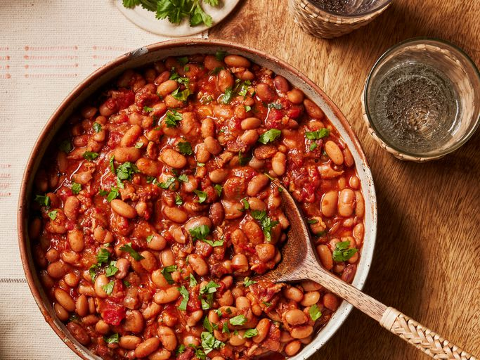

Mexican beans
Home

Pinto beans are simmered with onion, tomatoes, chili powder, cumin, and garlic in this easy one-pot recipe. I love making these beans just because they make the whole house smell so good, and the longer they simmer the better they taste. You could add 1/2 can of beer to make "borracho" beans. I personally taste-test throughout the entire cooking process and add extra seasoning as I feel it needs it. These beans could simmer all day long; just make sure they have plenty of water to keep the beans covered.
Ingredients
- 1 pound dried pinto beans, rinsed
- 4 cups water, or as needed
- 2 (10 ounce) cans diced tomatoes with green chile peppers (such as RO*TEL®)
- ½ pound bacon, cut into 1/2-inch pieces
- 1 yellow onion, chopped
- tablespoon chili powder, or to taste
- 1 tablespoon ground cumin, or to taste
- 1 ½ teaspoons garlic powder, or to taste
- ½ bunch fresh cilantro, choppedsalt to taste
Mexican Beans: the cooking part...
- Gather all ingredients.
- Place pinto beans into a large pot and pour in enough water to cover by 2 to 3 inches. Let beans soak overnight.
- Drain beans, return to pot, and pour in fresh water to cover.
- Add tomatoes, bacon, onion, chili powder, cumin, and garlic powder. Bring to a boil, reduce heat to low, and simmer for 3 hours.
- Check the beans occasionally and add more water if needed.
- Stir cilantro and salt into beans simmer until beans are soft, about 1 more hour.
- Serve and enjoy!